Soit f un difféomorphisme de la variété M, ou, plus généralement, une application différentiable de M (de dimension m) dans N (de dimension n). En coordonnées locales, f s’écrit à l’aide de n fonctions fα de m variables yα = fα(xμ). La matrice jacobienne de cette application est la matrice (n,m) des éléments ∂yα∕∂xμ. Une telle matrice définit une application linéaire de l’espace vectoriel tangent à M au point P dans l’espace tangent à N au point f(P). Soit {∂μ} un repère naturel de M défini dans un voisinage de P et {∂α} un repère naturel de N défini dans un voisinage de f(P). Soit v ∈ TP (M), on peut écrire v = vμ∂ μ. On obtient un vecteur w ∈ Tf(P)(N) en écrivant w = wα∂ α avec
Cette application, dite application linéaire tangente (ou “push forward”) se
note, suivant les auteurs f*, Tf, f~, ou même  et on dit que w =
et on dit que w =  (v) est
l’image directe de v. On peut bien entendu définir directement
(v) est
l’image directe de v. On peut bien entendu définir directement  sans utiliser de
systèmes coordonnés. De façon générale, à toute application différentiable
f : M → N, on associe une application linéaire tangente
sans utiliser de
systèmes coordonnés. De façon générale, à toute application différentiable
f : M → N, on associe une application linéaire tangente  : TM → TN, et si
v ∈ TP M, alors
: TM → TN, et si
v ∈ TP M, alors  [v] ∈ Tf(P)M.
Remarque : on peut toujours prendre l’image d’un vecteur tangent par
l’application tangente, mais l’image d’un champ de vecteurs v sur M ne définit
pas nécessairement un champ de vecteur sur N ; d’une part, en effet, rien ne
prouve qu’un point Q quelconque de N soit nécessairement dans l’image de f, et
par ailleurs, même si f est surjective, rien ne dit, dans le cas où deux
points distincts P1 et P2 seraient tels que f(P1) = f(P2) que l’image par
[v] ∈ Tf(P)M.
Remarque : on peut toujours prendre l’image d’un vecteur tangent par
l’application tangente, mais l’image d’un champ de vecteurs v sur M ne définit
pas nécessairement un champ de vecteur sur N ; d’une part, en effet, rien ne
prouve qu’un point Q quelconque de N soit nécessairement dans l’image de f, et
par ailleurs, même si f est surjective, rien ne dit, dans le cas où deux
points distincts P1 et P2 seraient tels que f(P1) = f(P2) que l’image par
 du vecteur v(P1) coïncide avec l’image par
du vecteur v(P1) coïncide avec l’image par  du vecteur v(P2). En
fait, pour une application differentiable surjective f : M → N donnée,
il est commode d’introduire la notion de champ de vecteurs projetable
: v ∈ Γ(TM) est dit projetable (par f) si, pour tout Q ∈ N et pour
toute paire (P1,P2) de points de M tels que Q = f(P1) = f(P2) on ait
du vecteur v(P2). En
fait, pour une application differentiable surjective f : M → N donnée,
il est commode d’introduire la notion de champ de vecteurs projetable
: v ∈ Γ(TM) est dit projetable (par f) si, pour tout Q ∈ N et pour
toute paire (P1,P2) de points de M tels que Q = f(P1) = f(P2) on ait
 [v(P1)] =
[v(P1)] =  [v(P2)] ; dans ce cas on obtient bien un champ de vecteur sur
N.
La même matrice jacobienne (∂yα∕∂xμ) définit également une application
linéaire de l’espace cotangent à N au point f(P) dans l’espace cotangent à M au
point P. En effet, soit τ ∈ Tf(P)*N, alors τ = τ
αdyα. L’image de la forme τ est la
forme σ ∈ TP *M, avec σ = σ
μdxμ et
[v(P2)] ; dans ce cas on obtient bien un champ de vecteur sur
N.
La même matrice jacobienne (∂yα∕∂xμ) définit également une application
linéaire de l’espace cotangent à N au point f(P) dans l’espace cotangent à M au
point P. En effet, soit τ ∈ Tf(P)*N, alors τ = τ
αdyα. L’image de la forme τ est la
forme σ ∈ TP *M, avec σ = σ
μdxμ et

Cette application, qu’on pourrait appeler application linéaire cotangente ,
(ou “pull back”) et noter f*, T*f, f~, ou même 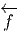 n’est donc autre que
la transposée de l’application linéaire tangente  au point P ∈ M :
elle envoie les co-vecteurs de N au point f(P) (i.e. les 1-formes de N au
point f(P) ) dans les co-vecteurs de M au point P. Si τ ∈ Tf(P)*N, alors
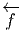(τ) = τ ∘
au point P ∈ M :
elle envoie les co-vecteurs de N au point f(P) (i.e. les 1-formes de N au
point f(P) ) dans les co-vecteurs de M au point P. Si τ ∈ Tf(P)*N, alors
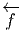(τ) = τ ∘ ∈ TP *M. Cette application de T
f(P)*N dans T
P *M ne peut
manifestement pas, en général, se généraliser à une application de T*N
dans T*M ; la situation n’est donc pas tout à fait analogue à celle de
l’application tangente, qui, elle, est bien définie, comme application de TM dans
TN.
Par contre, si ω est une 1-forme differentielle sur N, c’est à dire un champ de
co-vecteurs, on peut toujours considérer son image par 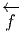 ; en effet, dans ce cas,
si v est un vecteur quelconque en P ∈ M, alors 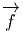(P) est un vecteur en
Q = f(P) ∈ N et le nombre ωQ[
∈ TP *M. Cette application de T
f(P)*N dans T
P *M ne peut
manifestement pas, en général, se généraliser à une application de T*N
dans T*M ; la situation n’est donc pas tout à fait analogue à celle de
l’application tangente, qui, elle, est bien définie, comme application de TM dans
TN.
Par contre, si ω est une 1-forme differentielle sur N, c’est à dire un champ de
co-vecteurs, on peut toujours considérer son image par 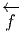 ; en effet, dans ce cas,
si v est un vecteur quelconque en P ∈ M, alors 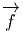(P) est un vecteur en
Q = f(P) ∈ N et le nombre ωQ[ (P)] est bien défini. On obtient ainsi une
1-forme differentielle sur M qu’on notera f*ω ou 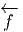(ω). On l’appelle en général
“pull back” de ω par f.
Quelques remarques sur les notations : on peut trouver commode d’utiliser de
nouveau le symbole df et d’écrire tout simplement (en un point P donné, non
explicitement indiqué par la notation)
(P)] est bien défini. On obtient ainsi une
1-forme differentielle sur M qu’on notera f*ω ou 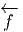(ω). On l’appelle en général
“pull back” de ω par f.
Quelques remarques sur les notations : on peut trouver commode d’utiliser de
nouveau le symbole df et d’écrire tout simplement (en un point P donné, non
explicitement indiqué par la notation)
La notation suivante est également très commode :

Si on choisit un repère mobile e = Λ
= Λ β∂
β dans N et un co-repère mobile
e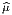 = L
ν
β∂
β dans N et un co-repère mobile
e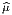 = L
ν dxν dans M, on pourra écrire également
dxν dans M, on pourra écrire également


 = (Λ-1)
α
= (Λ-1)
α (∂fα∕∂xμ)(L-1)
(∂fα∕∂xμ)(L-1) μ comme les
éléments de la matrice jacobienne de f par rapport au choix de deux repères
mobiles.
μ comme les
éléments de la matrice jacobienne de f par rapport au choix de deux repères
mobiles.
Nous venons de voir que les 1-formes de N peuvent être “rappelées” sur M à l’aide de 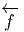 :

 (ω) ∈ ΩpM
par l’égalité
(ω) ∈ ΩpM
par l’égalité

Nous laissons au lecteur le soin de démontrer les propriétés suivantes :